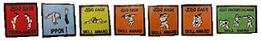

|
Lynn Schaan |
|
Upcoming Participation and Development Events: 2020 April 25–26, Judo Alberta Girls Camp, Lethbridge, AB 2020 April 17–19 Judo Sask Participation & Development Training Camp, Moose Jaw, SK 2020 August 16–22, Judo Sask Summer Camp, Rosthern, SK |
Related Programs: Questions about the following programs should be directed to the chair of Participation and Development. Marginalized Athletes Due to disability, social, economic factors many young people are unable to access sport. As research proves, sport provides a healthy and safe place for youth to learn a new skill and foster growth in self esteem and recognizing this; there are two ways to receive financial support: Apply to the Chair Camp Sponsorship The Participation and Development program has a budget to partially fund marginalized athletes who due to disability, social, economic factors may find the fee for camp a barrier to attending either summer or winter camp. 5x $100 winter camp and 5x$200.00 per summer camp. Athletes or their club may apply to the Chair, Justin Filteau Judo Saskatchewan Skill Crests  The crest and t-stripe program is available to all clubs registered with Judo Saskatchewan and provides the incentive and recognition to athletes with progressive icons of the sport of Judo. Crests are not to be sewn on judogi! A new brochure is being produced for all clubs to use and will be available soon. For more information on this program, please contact Justin Filteau. Crest Order Form |